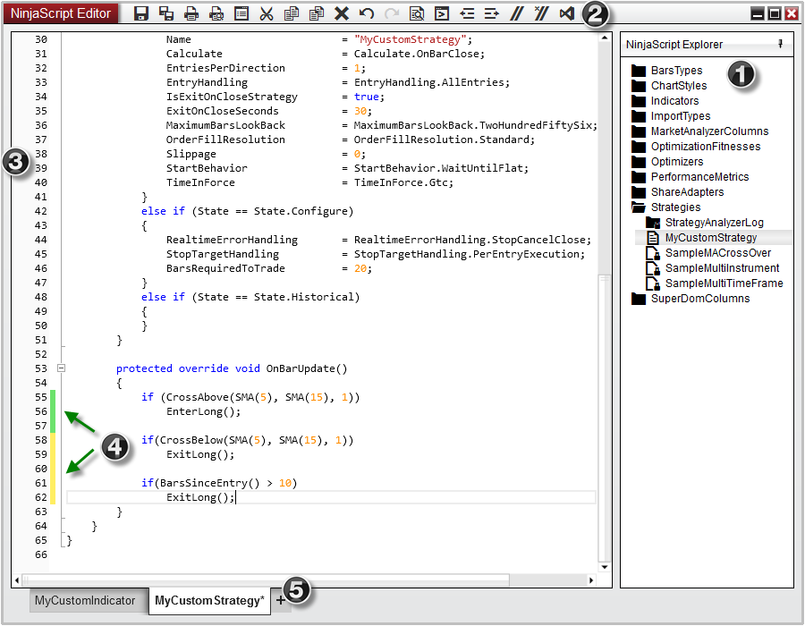
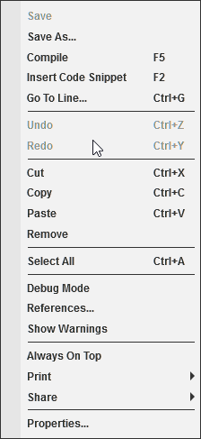

|
<< Click to Display Table of Contents >> NinjaScript Editor Components |


|
NinjaScript Editor Components
|
<< Click to Display Table of Contents >> NinjaScript Editor Components |
|
The NinjaScript Editor is a powerful scripting editor that allows you to create custom indicators, strategies, and any other custom NinjaScript types used to enhance the NinjaTrader platform. The NinjaScript Editor can be opened by selecting the New menu from the NinjaTrader Control Center. Then left mouse click on the menu item NinjaScript Editor
1. NinjaScript Explorer - Displays files, folders, and allows for additional file management
2. Tool bar - Moving your mouse over each icon will display the function of the icon button
3. Line numbers
4. Line modification marking - Yellow flags indicate unsaved line modifications where green flags indicate saved modifications
5. Tabs for creating new scripts via the NinjaScript wizard and working on multiple scripts.

Context menus can be opened by right-clicking in the NinjaScript Editor.

Context Menu Items |
|
Save |
Saves pending changes to the currently open NinjaScript |
Save As |
Creates a copy of the script and attempts to rename the class name so the new script is unique |
Insert Code Snippet |
Inserts a code snippet (see Code Snippets for more information) |
Go To Line... |
Moves the cursor to the line of code specified. |
Undo |
Undoes the last modification |
Redo |
Applies the modification that was last Undone |
Cut |
Removes selected text and copies to clipboard |
Copy |
Copies selected text to clipboard |
Paste |
Pastes the text saved in the clipboard |
Remove |
Removes the selected text |
Select All |
Selects all text in the Code Editor |
Debug Mode |
Sets if a debug dll should be generated on compilation (see Visual Studio Debugging for more information) |
References... |
Opens the list of dll references used by NinjaTrader. This includes dll's used by NinjaTrader and dll's installed with custom Add On's. |
Show Warnings |
Enables Warning messages to be seen alongside compile errors |
Always On Top |
Sets the NinjaScript Editor to viewed on top of other windows |
Allows printing the content of this window (see Printing Content for more information) |
|
Share |
Allows sharing the content of this window (see Sharing Content for more information) |
Properties |
Opens the Properties menu (see below) |
General |
|
Auto hide NinjaScript explorer |
Sets if the NinjaScript explorer should be collapsed by default |
Debug mode |
Sets if a debug dll should be generated on compilation (see Visual Studio Debugging for more information) |
Inline syntax checking |
Sets if errors and warnings should be detected as code is written (without needing to compile) |
Auto bracket completion |
Sets if opening characters should automatically bed appended closing characters. Works for (parentheses), [brackets], {braces}, <angled brackets> |
Show indentation lines |
Displays vertical lines for code formatting |
Show Warnings |
Sets if code warnings should be show on compilation. |
Font |
Sets the font options |
Window |
|
Always on top |
Sets if the window will be always on top of other windows. |